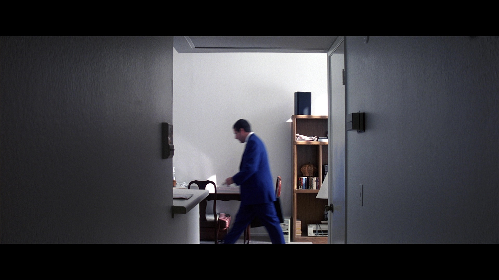
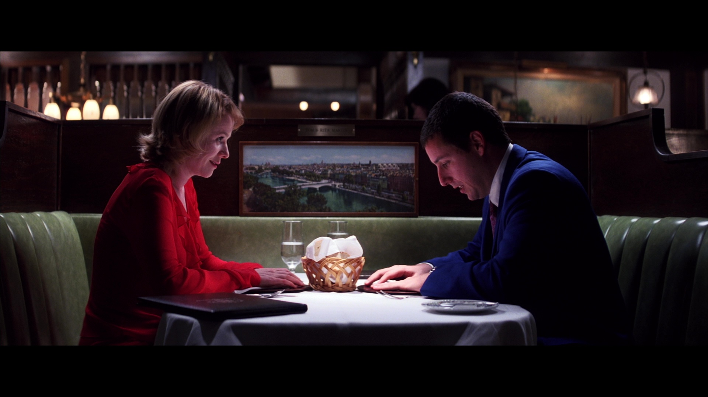
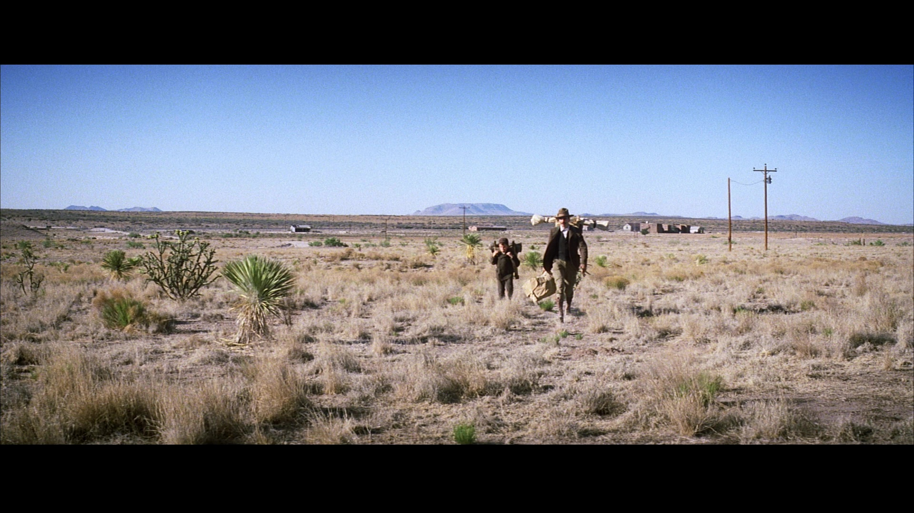
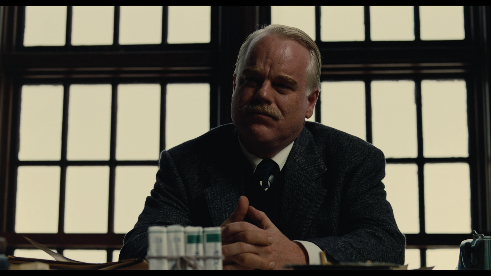
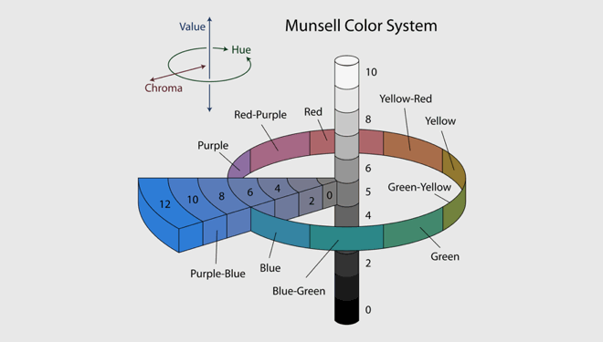

Any artistic work ever created has been subjected to the question of meaning; it is, after all, a viewer’s (or, perhaps, a human’s) natural response when faced with something new. However, within their article “Deformance and Interpretation,” Lisa Samuels and Jerome McGann pose the question, “how do we release or expose [the art’s] possibilities of meaning?” (Samuels and McGann “Deformance and Interpretation,” 28). “Deformative” methods of interpretation call for “responsive works of imagination, not reflexive works of analysis” (Samuels and McGann, “Deformance and Interpretation,” 29). This effort seeks to pry open a work, to reimagine it in novel and valuable ways in order to highlight new avenues of meaning and interpretation. These “deformative” works— such as reading a poem backwards (Samuels and McGann, “Deformance and Interpretation,” 26)— deconstruct the original text (or, in this case, film) to allow us to access what is not immediately accessible upon first viewing. “reinstalls the text—any text, prose or verse—as a performative event, a made thing” (Samuels & McGann, “Deformance and Interpretation,” 30).
This project aims to do something similar; it’s been heavily inspired by Dave Rodriguez’s Colors of Ozu, which in turn draws on concepts from Kevin Ferguson’s “Digital Surrealism: Visualizing Walt Disney Animation Studios.” Within his article, Ferguson coins the term “digital surrealism” to describe works that are created “by means of an automatic process which reveals otherwise unconscious information about film texts” (Ferguson, “Digital Surrealism: Visualizing Walt Disney Animation Studios”). Digital surrealism reflects the goal of 20th century surrealist visual art and literature, which sought to use “a new mode of expression called automatic writing, or automatism, which sought to release the unbridled imagination of the subconscious” (Voorhies, “Surrealism”). These artists built upon psychologists such as Sigmund Freud and political theorists such as Karl Marx in order to “[draw] upon the private world of the mind, traditionally restricted by reason and societal limitations, to produce surprising, unexpected imagery” (Voorhies, “Surrealism”). With this knowledge in mind, Ferguson’s “digital surrealism” makes much more sense: we’re literally using an automatic process (a program on a computer, activated with a single click) in order to unlock something about the film that is inconceivable on a normal watch. It’s as if we are reaching into the “mind” of the film (perhaps we’re really just reaching into the mind of the filmmaker) to procure these works.
This computer-driven “automatic process” that Ferguson refers to involves taking a film, splitting it into thousands of parts using a computer program, then smushing and stitching it back together via image processing software to create a static image that, while unmoving, also serves as a representation of an entire film as the sum of its individual parts. Surely, this is an avenue of deformative criticism; by summing entire films into single images, we’re able to tap into a method of viewing that is inaccessible and unimaginable when simply watching the film.
However, there is another view of this deformative method that pushes back on “de-forming only to re-form” (Sample, “Notes towards a Deformed Humanities”). In his work “Notes towards a Deformed Humanities,” Mark Sample muses on the idea that most deformative work fails to embrace the Deformance at the last possible moment, always circling back to the text as a means to provide analysis for the original work. Via the evocation of Humpty Dumpty, Sample writes that, after Humpty’s fall, instead of putting him back together, Sample would rather “let him lie there, a cracked shell oozing yolk. He is broken. And he is beautiful. The smell, the colors, the flow, the texture, the mess. All of it, it is unavailable until we break things…” (Sample, “Notes towards a Deformed Humanities”). Rather than using our deformative work simply as a means to an analytical end, we should appreciate the beauty of these deformed works as art in their own right. Ferguson’s method of digital surrealism, I believe, beautifully merges these two viewpoints. He writes that “While the resulting images on their own are aesthetically pleasing, a comparative analysis of a corpus of summed images can generate new analytical modes for digital humanists…out of this digitally-aided abstraction” (Ferguson, “Digital Surrealism: Visualizing Walt Disney Animation Studios”). While providing some analysis on their film of origin, images created via aggregating a film are also independent works of art.
In referring to these images as works of art, I believe it’s important to note that I do not view myself in this instance as an artist. While I am responsible for using image processing software as a tool to generate these images, and they exist as transformative works, they were still created using art that is not my own. If anything, I have facilitated a collaboration between Paul Thomas Anderson and the software used for this project.
I use three main types of images in this project— summed z-projections, montages, and median hue and saturation graphs, each of which I will describe in detail— to examine the feature film corpus of director Paul Thomas Anderson. Anderson makes use of color and composition as vehicles to communicate themes, foreshadowing, and various other aspects of a film; Punch-Drunk Love, for example, uses blue and red to represent Barry and Lena respectively. As Barry makes his way onto the Hawaii-bound airplane, the two airline employees on the jet bridge are dressed in red, representing the fact that Lena is the final destination of Barry’s journey (Paul Thomas Annotated: In the Margins). Throughout There Will Be Blood, Anderson uses high and low camera angles to show the audience who’s in control of that scene. Those are just a few examples (and many more can be found while exploring Paul Thomas Annotated: In the Margins!), but it is clear that Anderson’s use of color, composition, camera angles, etc. with analyzable intentionality. By utilizing image processing technology, we can illuminate these directorial choices, providing a basis of analysis while also creating an entirely new work of art.
All of the images within this project were made using a public domain image processing software called ImageJ, which was originally developed by the National Institute of Health (Ferguson, “Digital Surrealism: Visualizing Walt Disney Animation Studios”), but has since become a rich source of data collection methods for digital humanities projects. The features I’m most interested in for the sake of this project are z-projections, montages, and graphs that plot median hue and saturation. These images are created using another feature of ImageJ, called “stack.” A stack can be created in a couple of ways, but for this project I imported a folder that contained a series of stills from each film as an “image sequence.” ImageJ takes all of the images in the image sequence, and turns it into a stack! What the stack feature does, essentially, is stack each image fed into the program such that it creates a sort of three-dimensional object. It doesn’t look 3D to us, but it’s read as 3D within the program. In these stacks, the pixels that make up each image in the stack become voxels (volumetric pixels) in a 3D space (Ferreira and Rasband, “ImageJ User Guide: IJ 1.46r,” 12). These stacks can then be manipulated using different features of ImageJ to produce the desired image (in my case, these are the z-projections, montages, and graphs)!
The z-projection images were made using the “sum slices” setting for z-projections on ImageJ. To understand that process, it’s important to grasp that each pixel in each image in a stack has RGB values. RGB stands for red, green, blue, each of which have different numerical values that produce the desired color of the pixel. It’s almost as if you’re mixing paint; you need a certain amount of red, green, and blue paint to get the color you want. Instead of mixing paint, however, computers mix light. This is why the RGB values use red, green, and blue specifically; the human eye processes colored light as differing amounts of red, green, and blue. Thus, the “amount” of light is translated into different RGB values for the computer to read and produce; A higher red value adds more red into the image, A higher green value adds more green into the image, etc. When I ask ImageJ to sum the slices in a stack, ImageJ adds together all of the numerical voxel values (because, remember: a pixel becomes a voxel as it is transformed in the “3D” stack) to produce the voxel that appears in the summed image. The other settings, such as “average intensity,” just perform different mathematical equations on those numbers (Ferguson, “Digital Surrealism: Visualizing Walt Disney Animation Studios”); for average intensity, ImageJ, as expected, averages all of the numerical voxel values.
Now, we’re left with a big unanswered question. If ImageJ adds all of the RGB values together, wouldn’t all of the summed images’ RGB values be ridiculously high? Well, yes— but the maximum numerical RGB values for all of our images are 255, and RGB (255, 255, 255) is just white. So, ImageJ has to do some processing behind the scenes in order for us to actually see the image, and not just a white screen. The ImageJ user manual doesn’t explain this at all— it only describes the sum-slices setting as creating “the sum of the slices in a stack” (Ferreira and Rasband, “ImageJ User Guide: IJ 1.46r,” 90)— it can be presumed, then, that ImageJ is adjusting and resizing these values so that the ratios between them stay the same while still providing a viewable image.
This process compiles the entire film into one image, unique in its temporality. It’s not the entire film, of course, as it is but one image. Some smaller details get smoothed out in favor of larger, more prominent ones. However, it is not a single still either. A still would be a single temporal moment from the film, but that’s not what this image represents. Rodriguez refers to it as “a kind of “impression” or aggregation of the visual experience of the film itself distilled from its duration” (Rodriguez, Colors of Ozu). Ferguson notes that, “this process magnifies a cinematic experience that is otherwise entirely unnoticeable: the pure, cumulative effect of duration on our eyes and brains without the distraction of narrative or image” (Ferguson, “Digital Surrealism: Visualizing Walt Disney Animation Studios”). In aggregating the film into a single image, it draws out its most important and visually distinctive parts, leaving us with a “trace of the filmmaker’s intentions” that is impossible to imagine while only watching the film (Ferguson, “Digital Surrealism: Visualizing Walt Disney Animation Studios”). This distinct temporality applies not just to the z-projections, but to the montages and graphs as well. They each compress the entire viewing experience of a film into one, static image, allowing us to visually analyze these films in a new light.
The process for making montages and graphs is much simpler in comparison. The montage feature places each image in a stack side-by-side in sequence. It retains the chronological order of the film, while also presenting that chronology as “a two-dimensional field which can be scanned and interrogated in ways a traditional viewing would not allow (even with the advent of digital scrubbing, slow-motion replay, etc.)” (Rodriguez, Colors of Ozu). Viewing the montage as a whole object allows the viewer to examine each frame in the context of the entire film, illuminating their relationships to each other. We can also “glean a strong chromatic impression from having the visual palette of the film laid out in a single image” (Rodriguez, >Colors of Ozu). To make the graphs, I used an open-source add-on for ImageJ called ImagePlot which, as its name suggests, is able to measure data for each image in a set (creating numerical values for hue, saturation, etc.) and plot those images according to specified x and y values.
As I mentioned previously, these stacks are created with folders full of stills from each film. When I originally began this project, I created stacks using the screenshots already available on the website that houses Paul Thomas Annotated: In the Margins. However, I found that there were flaws in the screenshotting process that were clashing with what I was trying to do with the images. The screenshot capture guidelines instruct the reader to “capture a screenshot any time the focus of the frame shifts and highlights something new (character, background detail, etc.)” and “in scenes involving shot-reverse-shot conversations that use many derivative shots (variations on a shot), for instance, take a representative number of screenshots, not necessarily every time the camera flips between characters” (Paul Thomas Annotated: In the Margins, internal documentation). This is a very qualitative method that, while it fits the needs of Paul Thomas Annotated, fails to account for the unique temporality that these digital surrealist works are meant to provide. This lack of temporality also lead to many of my original z-projections looking nearly identical, failing to convey the unique identity of their original films. This method also doesn’t accurately communicate how long an object or image is on screen, and fails to actually accurately account for every shot (not every shot in a shot-reverse-shot sequence is recorded, for example). Additionally, it favors moments in which more events and cuts are happening, creating a dataset that can be skewed towards more eventful sequences of a film. None of this is to bash or insult that process; I’ve seen how arduous and time-consuming it is! It is not a failure for what it seeks to do; it was just clear that I needed a different dataset and a different approach.
I ended up utilizing the same program used to capture stills for both “Colors of Ozu” and “Digital Surrealism: Visualizing Walt Disney Animation Studios.” It’s an open-source tool called Ffmpeg, that has no graphic user interface and instead requires users to interact with the command line. The command line is a text-based tool that allows you to communicate and issue commands directly to your computer’s operating system (I recognize that sounds intimidating, but I encourage everyone to give it a try)! The advantage here is that while other programs may require it to run for the entire duration of the film, FFmpeg can extract stills in a fraction of that time. The command I used (the same one that was used by Dave Rodriguez, which can be found here) was set to create a still of one frame for every two seconds of video, creating over 4000 images for each film. This qualitative method allowed me to create images that serve as a much better data set; the images created from these stills were able to accurately portray the unique temporality that comes with aggregating an entire film, and each had much more striking visuals.
The first striking thing about this collection of Z-Projections is just how different they are from one another. As I look at the summed z-projection for Punch-Drunk Love, I feel as though I’m viewing multiple scenes playing out at once; I see various figures performing various actions: sitting down for dinner, peeking out from behind a wall, standing, walking, etc. However, looking at the summed z-projection of The Master, I feel as though I’m looking at the shape of Lancaster Dodd himself through a fogged-up window. Hard Eight looks like an open doorway, with lights of a marquee over on the right side. This reflects the varied types of shots and compositions used by Paul Thomas Anderson; the longer a figure, shot, object, or color is onscreen, the more it imprints itself on the final image, so the varied shapes and colors reflect varied colors and shot compositions.

A summed z-projection of Punch-Drunk Love (left), and a screenshot from the film itself (right)
This is a really unique shot; the camera stays stationary as Barry moves around the room, being begged by “Georgia” from the phone sex line to send her some money. The camera is in the shadows, as if spying on Barry, reflecting how much Barry doesn’t want anyone to know that he’s called a phone sex line. Because of the stationary camera, that chair stays in the same spot on screen for an extended period of time, and thus is visible in the final image.

A screenshot from Punch-Drunk Love (left), and the film's z-projection (right)
Another scene that really shines through in this image is Barry and Lena’s dinner date; you can clearly see their silhouettes on either side of the projection. The presence of the two central figures indicates to us that this film isn’t just about Barry and his individual journey, but the story of a relationship blossoming between two people. The image’s overall color also demonstrates this; it’s purple color is a combination of blue and red, the two colors commonly used to represent Barry and Lena. The z-projection then becomes a metaphor for the film itself: just as red and blue come together via the z-projection to form a purple hue, Barry and Lena come together over the course of the film to form a relationship that brings new meaning to both of their lives.
Conversely, the z-projection for There Will Be Blood doesn’t appear to contain any figures, but instead reflects the long, sweeping shots of Little Boston’s landscape:


A summed z-projection of There Will Be Blood (left), and a screenshot from the film itself (right)
This places emphasis on the land itself, which Daniel— like a vampire— will suck up all of the oil from. It draws our attention to the subject of his exploitation. Daniel tries to suck the life out of everything; he treats the land of Isabella County the same way he treats people, such as the Sundays or, as he claims, H.W. The z-projection, then, has placed emphasis on Daniel’s character and the way he treats others.
If we turn to The Master, we can once again see a human figure; the shady outline of a person looks remarkably similar to the shots of Dodd during his final interaction with Freddie towards the end of the film:


A screenshot from The Master (left), and the film's z-projection (right)
This scene is one of extreme emotional tension; By centering Dodd in the frame and zooming in so closely, you achieve an almost suffocating atmosphere, forcing the viewer to focus on his farewell song to Freddie and the visceral relationship that has been built between these two men.
These very simple analyses have been facilitated by the use of the z-projection; they highlight some of the most relevant and important images in the film by showing, through their temporal aggregation of the entire film, which objects have been shown and emphasized the most. This places the z-projection not only in a place of analysis, but also of discovery— it is not only an analyzable piece in itself, as you can examine it for shapes, colors, and other aspects relevant to the film, but it can serve as a springboard for further interrogation and analysis of the original film by displaying the importance of certain objects, which may not be apparent while simply viewing it.


From left to right, top to bottom: Hard Eight, The Master, One Battle After Another, Punch-Drunk Love.
When it comes to film, hue and saturation play a large part. When I say hue, I’m referring to “the section of light that color comes from” (“Color in Film: Color Basics”). It’s what people normally think of when they think of color; red, green, and blue all have different hues. However, the “intensity” or “brightness” of a color doesn’t affect its value. A light blue, for example, has the same hue as a dark blue. Saturation, on the other hand, describes the intensity of a color, or “’how much’ of a color is present” (“Color in Film: Color Basics”). A very light pink is less saturated than firetruck red. There is a third variable at play here, value, which refers to the “lightness or darkness of a color;” value is also sometimes referred to as brightness (“Color in Film: Color Basics”). These three variable are crucial to creating any given color.

This diagram shows hue, saturation (chroma), and brightness (value)(Bradly,"The Fundamentals of Color: Hue, Saturation, And Lightness").
Color provides ample opportunity to filmmakers to visually communicate tone and meaning in their films. Warm tones (yellows, oranges, reds) may be used to communicate happiness or safety, while cooler tones (blues, purples) may be used communicate sadness, loneliness, and isolation. These are all subjective, of course; individual films can ascribe their own meanings to any and all colors, and the connotations a certain color carries will vary depending on who is making or viewing a film. Changing the colors in a scene can change that scene’s entire tone and mood. In any case, though, color remains a valuable stylistic element for filmmakers to utilize.
With this in mind, I have chosen to use ImagePlot to create graphs that map median hue on the x-axis and median saturation on the y-axis. When I refer to the median, I am referring to the “middle” value of every hue and saturation value in a still; I obtained this data by using the ‘ImageMeasure’ add-on to ImagePlot, which can be found in the ‘extras’ folder. The higher the hue value, the further the color is on a model like a color wheel (the lower values are towards red, and the higher values towards blue and purple); The higher the saturation value, the more intense the color is. I chose to plot hue because of how important it is to communicating tone, mood, and other elements, while I chose to map saturation in order to determine the intensity of that important color. This is useful when examining films such as Punch-Drunk Love, which purposefully uses desaturated color to convey its story. As I move into the final version of this project, I’m also hoping to make graphs that plot the median brightness as well, in order to convey the contrasts between light and dark.
To apply this method, we can look at the graph for Punch-Drunk Love, which plots median hue on the x-axis, and median saturation on the y-axis:

A graph mapping the median hue and median saturation for each slice of Punch-Drunnk Love.
The majority of the frames taken from the film are in the bottom right section of the graph, indicating that much of the film uses cool-toned, desaturated lighting. Barry’s office is his safe space, but it is bathed in uncomfortable fluorescent light. It’s lonely, devoid of the vibrancy and color that comes with human connection; this reflects the lonely state that Barry finds himself in at the beginning of the film. The graph displays the heavy emphasis that the film places on that loneliness, along with Barry’s journey towards breaking free from it, allowing us to center that loneliness within our analysis, if we were to interrogate further. It illuminates the emphasis placed on certain hues, and the saturation of those hues, indicating what the filmmaker trying their hardest to communicate via the film. In the case of Punch-Drunk Love, we can see just how much the film centers around Barry’s loneliness and his quest for human connection.
Conversely, looking at the graph for Licorice Pizza, I was immediately struck by how yellow the film was:

A graph mapping the median hue and median saturation for each slice of Licorice Pizza/p>
This yellowish tint that defines the film is a reflection of its depiction of the 70s, but it’s thematically relevant as well; Licorice Pizza is a coming-of-age film in which the main character, Gary Valentine, is constantly balancing the tension between wanting to be perceived as an adult, while also wanting to retreat into the warm, carefree fantasies of childhood. It makes sense, then, why the film would bathe itself in a warm, yellow light; through it, Anderson captures the innocence and fun of childhood, which aligns with the loose, episodic structure of the film itself. Just as with the z-projections, these graphs allow us to highlight certain aspects of each film as a means for analysis.

Hard Eight
Montages are one of the more interesting types of images in terms of their temporality. Like the z-projections and graphs, they too aggregate an entire film into a single image, but there is an element of chronology that the other two cannot convey. When looking at a montage, we can see every slice in the context of the entire film; every still image exists in context with the others. We can view chronological developments of color as a film progresses through its runtime, and gain an overview of the film’s colors as a whole. Let’s examine the montage for Punch-Drunk Love, for example.

Montage of Punch-Drunk Love
Many segments of the film are bathed in a bright, almost uncomfortable fluorescent light that shines in through desaturated whites and grays. In the beginning of the film, as I spoke about in the previous section, Barry is closed off, stagnant, and lonely. The warehouse in which his office is housed is reflective of this; despite being his area of comfort (one might expect a comforting place to be full of soft, warm tones), Barry’s office is drowned in desaturated color. However, there are pops of color throughout; As the film progresses chronologically, those strips of fluorescent light become shorter and fewer until the credits scene bursts onscreen with its beautiful, saturated colors. The credits scene is an example of some of the particularly colorful moments of the film, which occur when Barry actively allows that color to flow into his life. The two dreamlike color sequences of the film, created by Jeremy Blake, come after these particular moments; The first comes directly after Barry brings the harmonium into his office, and the second— the credits sequence— appears after Barry resolves to stay in Lena’s life and follow her wherever she goes. Through these actions, Barry actively chooses to allow love and spontaneity to enter his personal sphere, hence the bursts of color. More saturated colors also appear throughout the film naturally as a result of a changed setting, such as Barry’s spontaneous visit to Hawaii, or his date with Lena, but the element of Barry’s agency and choice is still present. The shifts from washed out, fluorescent lit whites and blues to bursting, saturated colors develops in a chronological way that becomes illuminated via examination of the montage.
We can also examine the montage of The Master:

Montage of The Master
The Master is a film about contrasts, flashing between extreme moments of light and darkness. “In particular,” writes Philip Bagnall, “it’s all about people looking for the light, being bathed in glows and beams, only to wind up darkened and despairing before another light source rejuvenates them anew” (Bagnall, “Walking in the Light: Illuminating religion in Paul Thomas Anderson’s THE MASTER”). Characters are suffocated and pulled in by literal darkness in their moments of mental darkness, while they are drawn to hope made manifest in the light like moths to a cloth-covered flame. For example, after Freddie is accused of poisoning a fellow farm worker and forced to flee, he wanders hopelessly through the darkness of a San Francisco night, only to become captivated by the bright, warm light of the yacht. The Cause and the people he finds there become a new source of hope and purpose for Freddie, illustrated in the lighting of this scene. If we examine the temporal relationship between light and darkness throughout the film, we can see a steady climb from darkness to light that begins during Freddie’s “processing” (illustrated by a dark black strip of stills towards the top of the image) and culminates in Freddie’s motorcycle ride under a bright desert sky (illustrated in the long, bright strip of stills towards the bottom of the image). The chronological shifts in light and darkness throughout The Master are now illuminated to us, and are able to support our analysis.
By using the montage feature— as illustrated by these short analyses of both Punch-Drunk Love and The Master— we are able to gain insight into the “chromatic impression” (Dave Rodriquez, Colors of Ozu) of a film that Rodriguez describes. The chronological nature of the montage helps to show the intentional shifts in color and brightness within these films that Paul Thomas Anderson uses to communicate emotional elements of a film to his audience which would otherwise not be available during a regular viewing experience.

Hard Eight
Fascinatingly, these images are also quite reflective of the genre of their original films. Paul Thomas Anderson’s films span across many genres; he’s directed romances, dramas, period pieces, and comedies, to name a few. The features of these genres that can be seen in the images used here can provide a point of comparison for films across Paul Thomas Anderson’s entire corpus. I utilize the montages here specifically because I believe that they provide the most visually intuitive accurate sense of a film’s overall palette, especially when a film utilizes extreme contrast; sometimes, with visualizations like z-projections, that contrast gets lost. Examining Licorice Pizza and Punch-Drunk Love, which are classified by many as romantic comedies, we can see this classification is reflected in both films’ use of bright, colorful compositions.

The montages for Licorice Pizza (left) and Punch-Drunk Love (right)
If we take a look at some of Anderson’s dramas, however, it’s a very different story:

The montages for Hard Eight (left) and Magnolia (right)
Hard Eight and Magnolia are two of Paul Thomas Anderson’s earlier films; while Hard Eight is a neo-noir crime drama, and Magnolia is a sprawling collection of interpersonal storylines, they both fall into the dramatic genre. Unlike the rom-coms, these montages are almost entirely dark. As dramas usually deal with serious, emotionally-charged plotlines, this darkness is reflective of a sort of emotional darkness, juxtaposed with the warmth and happiness that rom-coms usually bring to mind. This pattern is also consistent with Boogie Nights, The Master, and There Will Be Blood:


The montages for Boogie Nights (left), The Master (middle), and There Will Be Blood (right)
While I recognize that these films also commonly utilize brightness to demonstrate contrast, they’re also all characterized by frequent stretches of darkness. Predictably, the stills from these three films are also on the desaturated side; compared to the rom-coms, they’re far less colorful, reflecting their more serious emotional tone.


When I began this project, I wondered if I would get images similar to those gathered in Colors of Ozu. The z-projections themselves are what originally drew me to the project; they were all so visually distinct, as if I were viewing a shot from the film through a foggy, dreamlike lens. Each z-projection made for Colors of Ozu contains a very clear image of one, central figure, with light skin and dark hair.


Summed z-projections of An Autumn Afternoon and Equinox Flower (Rodriguez, Colors of Ozu)
These images are, as Rodriguez describes, uniquely reflective of Ozu’s filmmaking style. Rodriguez poses that they may “illustrate the rigorous conventions of Ozu’s style” (Rodriguez, Colors of Ozu). As Donald Richie describes in Ozu- His Life and Films, “Ozu’s pictures… are made with very little…invariable camera angle, no camera movement, a restricted use of cinematic punctuation” (Richie 9). In that way, his films reflect this strictness of style and all resemble one another (Richie, Ozu- His Life and Films, 9). Richie notes that “there can have been few artists whose oeuvre is so completely consistent” (Richie, Ozu- His Life and Films, 9). Ozu himself said, “I always tell people I don’t make anything besides tofu (white bean curd, a common and essential ingredient in Japanese food), and that is because I am strictly a tofu-dealer” (Richie, Ozu- His Life and Films, 9). This also carries weight in examining the consistency in the plots, themes, and characters of Ozu’s films, but as Rodriguez has demonstrated here, this is also reflected in the visuals of Ozu’s work.
I was delighted to discover that the summed z-projections I made of Paul Thomas Anderson’s films were strikingly different. Take the z-projection I generated of Punch-Drunk Love, for example:
Summed z-projection of Punch-Drunk Love
The first noticeable difference between these two images is their aspect ratios. An aspect ratio is the ratio between an images width and height. If an aspect ratio for an image is 2:1, for example, that means the image is twice as wide as it is tall. As we can observe here, Ozu filmed in the 1.37:1 “Academy” aspect ratio, never making any feature films using widescreen cinematography first introduced in the 1950s (Rodriguez, >Colors of Ozu). The Academy ratio was adopted by the Academy of Motion Pictures Arts and Sciences in 1932, and ensured that “all films produced in Hollywood during the studio era could be distributed nationally and internationally and all exhibitors would be able to set up their projection equipment and screens to reproduce this aspect ratio correctly” (Kuhn and Westwell, A Dictionary of Film Studies). According to American film theorist David Bordwell, Ozu “compared the widescreen frame of CinemaScope to a roll of toilet paper (Rodriguez, Colors of Ozu). The Academy ratio is then reflective of the technologies available during the time when Ozu was filming movies, along with the strict cinematic style that developed as a result of those technologies.
Anderson’s films are, predictably, quite different in that respect. Out of his ten current feature films, six (his first five films and Licorice Pizza) use a 2.39:1 widescreen aspect ratio, while four use a 1.85:1 aspect ratio (“The Imperfect Cinematography Of Paul Thomas Anderson”). This widescreen format allows for a better image quality, along with a more immersive viewing experience for the audience. For films such as There Will Be Blood, the wide aspect ratio lends itself well to long, sweeping shots of Little Boston’s vast landscape; for more intimate scenes, it allows for a higher level of visual detail.
Paul Thomas Anderson clearly uses a far more varied style of filming than Ozu; within this Punch-Drunk Love projection, one can make out multiple different shot compositions: there’s the dinner scene between Barry and Lena, a ghost of Barry peeking out from behind a corner in the middle of the image, and remnants of Punch-Drunk Love’s various colorful cinematic sequences scattered throughout. Various impressions are left in many parts of the image, rather than a single, central figure. It’s very different from the z-projections created by Rodriguez in aggregating the color films of Ozu. In comparing these two images, which collect the “[traces] of the filmmaker’s intentions,” (Ferguson, “Digital Surrealism: Visualizing Walt Disney Animation Studios”) as Ferguson said previously, we are able to gain a greater knowledge regarding the differences in filmmaking styles between these two directors.
These images have provided us both with their own analyses, and with a springboard for further interrogation, but we haven’t yet allowed ourselves to stand back and appreciate them as their own artistic bodies. Part of the goal of this project has been to let these images speak for themselves, after all. That goal begs the question, what can we get out of these images when they are removed from the contexts of their films? Can they contain something within themselves more than just an aesthetically pleasing image? In “Deformin' in the Rain: How (and Why) to Break a Classic Film,” Jason Mittel continues to build from the methodologies surrounding deformative criticism. He “fully admit[s] that these resulting works are difficult to categorize. Are they acts of scholarship? Do they contain or provoke arguments? Or are they creative works, more akin to experimental films?” (Mittell, “Deformin' in the Rain: How (and Why) to Break a Classic Film”).
Ferguson places his work, particularly his z-projections, in multiple artistic traditions. Calling on the work of Mark Rothko, who has been placed by critics into an abstract “color field” tradition, Ferguson presents his z-projections for comparison. Rothko’s “Multiforms,” colorful paintings of blobbed and layered shapes, were created as an attempt “to purge from his work myth, symbol, landscape, figure, drawing of any kind, in order to paint in patches of hazy, luminous color” (Breslin, Mark Rothko: A Biography, 232.). From this effort to break the cycle of dazed, half-alive weeks born out of a love/hate relationship with his vocation as an artist (Breslin, Mark Rothko: A Biography, 233), come warm, intense works that “suggest a man who… is working in a state of infatuation with his media, as if he has just discovered it” (Breslin, Mark Rothko: A Biography, 235). As his style matured into the “color fields” that Ferguson draws on, Rothko’s nonfigurative painting became efforts to overcome loneliness and vitalize the very activity of painting (Breslin, Mark Rothko: A Biography, 237).

An exhibition of Rothko's Seagram Murals, an example of his "color field" style (Jean-Pierre Dalbéra, CC BY 2.0, via Wikimedia Commons)
As I recall my time working on this project, I relate to these sentiments very deeply. When I found Rodriguez’s project, and later Ferguson’s, it was as if something switched on in my brain. I have since become overwhelmed with an interest in the Digital Humanities, and this interest has facilitated the writing of what is (so far) the longest academic piece I’ve ever written— and it’s felt like it’s taken almost no effort at all. It’s even facilitated my speaking at an academic conference, something that I thought I would’ve been much more afraid about doing (and that’s ignoring the fact that I decided to sign up only a few hours before). I have approached this project with so much joy and excitement at the feeling that I’m actually doing something to contribute to my field; I have found infatuation with my medium upon discovering it for the first time. I felt as if I were revitalizing my joy for writing just as Rothko was revitalizing his joy for painting.
In this way, these images serve as testaments and love letters to the joy of creation and discovery. Mittell writes that “deformative criticism is a reminder of the joys of discovery, finding something distinct and refreshing even within the most familiar film, breaking apart our critical preconceptions to point us toward new, strange pathways” (Mittell, “Deformin' in the Rain: How (and Why) to Break a Classic Film”). I’ve already had the chance to enjoy Paul Thomas Anderson’s films, but this project has given me the opportunity to enjoy them all over again in a fresh medium. I hesitate to ascribe a purpose to these works when viewing them as their own body— I personally don’t think an object needs a purpose to be meaningful, and I don’t want to risk taking away from our appreciation of these works as art on their own— but if they did have a purpose, I believe it would be to bring the viewer this sense joy and discovery. I believe this project has succeeded in doing just that. It’s certainly given me that joy, and I can only hope I have succeeded in conveying it to you, the reader, as well.


{kind=link}